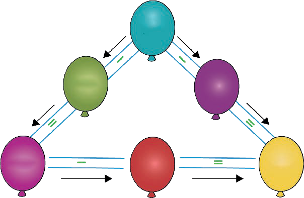

Exercise 2
Write the answer in each question.
1.436 − 321 =
2.758 − 643 =
3.239 − 115 =
4.384 − 243 =
5.895 − 670 =
6.267 − 145 =
7.530 − 410 =
8.682 − 381 =
9.999 − 717 =
10.246 − 123 =
11.896 − 643 =
12.900 − 500 =
13.729 − 408 =
14.256 − 113 =
15.446 − 325 =
16.185 − 172 =
17.388 − 216 =
18.888 − 283 =
Activity 1
Subtraction game
1.Use the direction of the arrows to fill the missing
numbers in the balloons.

900 100 800 60060
Exercise 2. Write the answer in each question. Question 1. 436 minus 321 equals. Question 2. 758 minus 643 equals. Question 3. 239 minus 115 equals. Question 4. 384 minus 243 equals. Question 5. 895 minus 670 equals. Question 6. 267 minus 145 equals. Question 7. 530 minus 410 equals. Question 8. 682 minus 381 equals. Question 9. 999 minus 717 equals. Question 10. 246 minus 123 equals. Question 11. 896 minus 643 equals. Question 12. 900 minus 500 equals. Question 13. 729 minus 408 equals. Question 14. 256 minus 113 equals. Question 15. 446 minus 325 equals. Question 16. 185 minus 172 equals. Question 17. 388 minus 216 equals. Question 18. 888 minus 283 equals. Activity 1. Subtraction game. Question 1. Use the direction of the arrows to fill the missing numbers in the balloons. The diagram has six balloons connected by arrows. The left path shows 900 minus 100 equals 800. The right path shows 900 minus a missing number equals 600. The bottom row shows 800 minus a missing number equals 600. 1. 436 – 321 =10. 246 – 123 =2. 758 – 643 =11. 896 – 643 =3. 239 – 115 =12. 900 – 500 =4. 384 – 243 =13. 729 – 408 =5. 895 – 670 =14. 256 – 113 =6. 267 – 145 =15. 446 – 325 =7. 530 – 410 =16. 185 – 172 =8. 682 – 381 =17. 388 – 216 =9. 999 – 717 =18. 888 – 283 =1. Use the direction of the arrows to fill the missing numbers in the balloons. ARITHMETICS PUPIL'S STD 2.indd 6006/11/2024 17:23